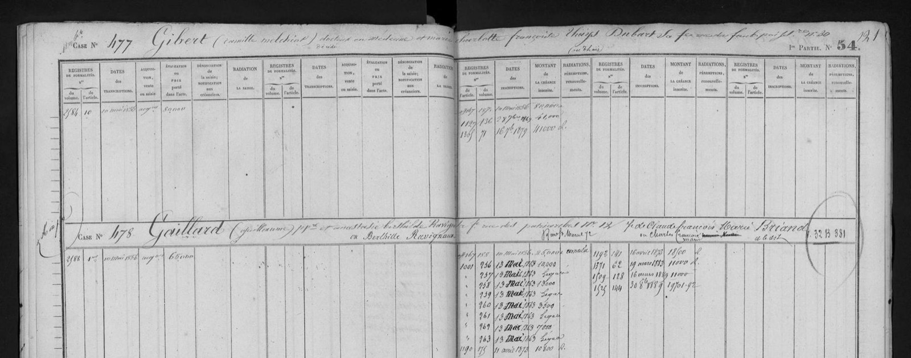

Dossier administratif · 1856-1879
Hypothèques, 1re conservation de Paris : table du répertoire vol. 78 f° 197 (Gibert) et répertoire des formalités vol. 23G case 477 (Gibert Camille Melchior et Thaïs Dubart)
Ce document établit
- Le 10 mai 1856, Camille Melchior Gibert, docteur en médecine, et sa femme Thaïs Dubart, alors domiciliés 30 faubourg Poissonnière, font transcrire une acquisition immobilière de 80 000 F à Paris ; des inscriptions de créance grèvent le bien le même jour (80 000), le 28/10 [?] 1869 (41 000) et le 16/09/1879 (11 000) vérifié A0249
« « 10 mai 1856 | acq[uisitio]n | 80 000 » ; inscriptions « 10 mai 1856 80 000 », « 28 8bre 1869 41 000 », « 16 7bre 1879 11 000 » » (lecture incertaine : 8bre ; volumes)
- Dans la table des hypothèques (reliée vers 1875), Camille Melchior Gibert est domicilié 104 faubourg Poissonnière, l'adresse où Louis Dubart, son beau-frère, est domicilié en 1869-1871 et à sa mort : Louis a probablement vécu ses dernières années dans l'immeuble de sa sœur et de son beau-frère non résolu A0250
« « Dubart sa f[emm]e | Camille Melchior | docteur en médecine | R. du fg Poissonnière n° 104 » »
- L'immeuble acquis par les Gibert le 10 mai 1856 (80 000 F) est probablement le 104 faubourg Poissonnière, où ils s'installent entre 1856 et 1858 et où vivront ensuite Edmond (1866) et Louis Dubart (1868-1871) non résolu A0261
« acquisition de 80 000 F le 10 mai 1856 »
Transcription
recherches/generation-4/dubart-gibert/transcriptions.md (G15)
Lire la transcription intégrale : Transcriptions — Louis Charles Ambroise DUBART (Sosa 8) →
Personnes concernées
Louis Charles Ambroise DUBART° 1804 † 1871Camille Melchior GIBERT° 1797 † 1866Marie Françoise Thais DUBART° 1798? † >1867?
Répertoire : références et montants ; l'acte lui-même est au registre des transcriptions (salle de lecture)